graphes
Ce cours comporte plusieurs pages:
- cours sur les graphes. Term NSI
- algorithmes de parcours des graphes
- TP 1 sur l’implementation en python des graphes
- TP 2 sur la coloration d’un graphe
- TP sur les algorithmes de parcours des graphes (app en ligne)
- algorithme de Dijkstra
- Protocoles de routage
Graphes
Les graphes et les arbres permettent de construire des schémas qui mettent en évidence une structure sur des données.
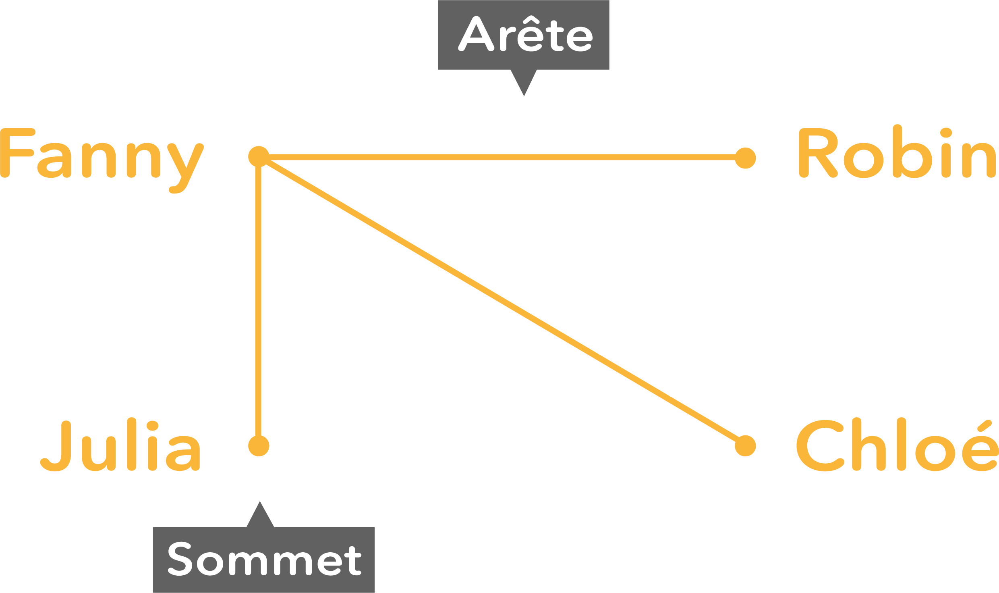
graphe modelisant un reseau social
Complexité et morphologie d’un graphe - définitions
On appelle graphe la donnée d’un ensemble fini V de points (ou sommets du graphe, vertices en anglais) et d’un ensemble E de liens entre ces points.
$$G = (V,E)$$L’ensemble E de liens peut être vu comme une relation R sur V × V. Il peut être représenté par une matrice d’adjacence.
-
Lorsque cette relation est symétrique (c’est à dire que l’existence d’un lien entre un sommet s1 et un sommet s2 est réciproque) le graphe est dit non orienté. Un lien est appelé une arête.
-
Lorsque cette relation n’est pas symétrique, le graphe est dit orienté. On parle alors d’arc entre deux sommets.
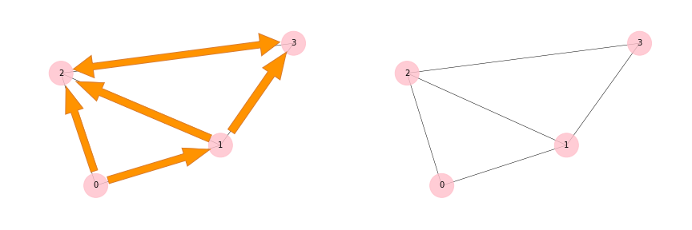
graphe orienté/non orienté
Des poids peuvent être associés aux liens d’un graphe, par exemple pour représenter la distance. Il s’agit alors d’un graphe pondéré.
Un graphe peut servir à modéliser un reseau d’ordinateurs, un reseau social, les distances entre villes par la route…
Lorsqu’un graphe non orienté est en un seul morceau, c’est à dire lorsqu’il existe pour tous sommets s1 et s2 un chemin les reliant, le graphe est dit connexe.
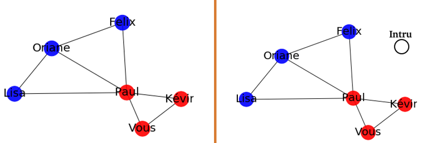
graphes connexe/non connexe
Des poids peuvent être associés aux liens d’un graphe, par exemple pour représenter la distance. Il s’agit alors d’un graphe pondéré.
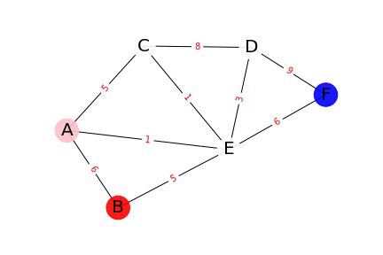
exemple de graphe pondéré
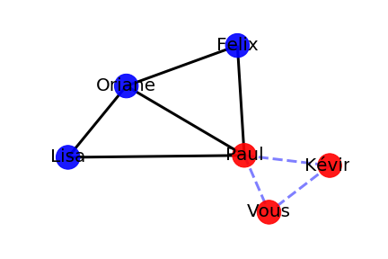
cycle dans un graphe
Mesures sur un graphe
- Ordre: le nombre de ses sommets
- taille : le nombre de ses arêtes
- degré d’un sommet s: nombre d’arêtes qui relient ce sommet à d’autres sommets.
Pour un graphe orienté, le degré d’un sommet est le nombre d’arcs qui sont dirigés vers ce sommet.
- un graphe est dit complet si tous ses sommets sont connectés entre eux deux-à-deux. Pour N sommets, cela correspond à un nombre d’arcs égal à: (graphe non orienté)
- La densité D d’un graphe est une indication générale de sa connectivité et indique s’il y a beaucoup ou peu d’arêtes. C’est le rapport entre le nombre d’arêtes existantes et leur nombre possible:
Le graphe est creux si sa densité est proche de zero, et dense si elle se rapproche de 1.
- Diamètre d’un graphe: plus longue distance entre sommets du graphe. Voir plus loin.
Application: Choisir la structure de donnée adaptée
Question: Pour chacun des exemples suivants, choisir le type de graphe adapté parmi: graphe orienté/non orienté, pondéré, non connexe, sans cycle. Précisez également ce que représentera un sommet, et ce qui sera une arête.
- un reseau de villes reliées par des routes, comportant l’information de leur longueur (en km). Toutes les villes sont supposées être reliées par au moins une route. Ces routes sont toutes en double sens.
- un reseau social de type Facebook, où les participants ont des liens d’amitié entre-eux. Ce lien est réciproque (si Marcel est ami avec Justine, alors Justine est aussi amie avec Marcel). Les sous-reseaux ne sont pas tous reliés entre eux. (Il existe au moins deux groupes A et B complètement indépendants: aucune des personnes de A n’est amie avec celles de B).
- un reseau social de type Twitter: les participants ont des folowers. Cette relation n’est pas réciproque. Les folowers suivent les participants qui partagent les même centres d’intérêt.
- une partie de jeu de morpion (tic-tac-toe), où les états de la partie sont liés aux états suivants possibles.
Implémentations
Plusieurs modes de représentation sont possibles pour stocker des graphes: matrices d’adjacence, listes des voisins, des successeurs ou des prédécesseurs. On peut les classer en 2 catégories:
- Les représentations matricielles
- Les représentations sous forme de liste chainée
Liste de voisins et matrice d’adjacence
Liste de voisins
Un exemple simple présente ici un graphe créé à partir d’une liste de voisins: [[1, 2], [0, 2, 3], [0, 1, 3], [1, 2]]
La première sous-liste correspond aux liens que forme le sommet 0. Ici, c’est donc avec les sommets 1 et 2.
C’est aussi la représentation d’une liste chainée.
Liste d’adjacence
Cette liste L peut aussi être mise sous forme d’une matrice M:
M = [[0, 1, 1, 0], [1, 0, 1, 1], [1, 1, 0, 1], [0, 1, 1, 0]]
ce qui forme une matrice, en présentant les sous-listes l’une sous l’autre:
$$\begin{pmatrix} 0 & 1 & 1 & 0 \\\ 1 & 0 & 1 & 1 \\\ 1 & 1 & 0 & 1 \\\ 0 & 1 & 1 & 0 \end{pmatrix}$$Avec la premiere sous-liste [0, 1, 1, 0] le sommet 0 est lié aux sommets 1 et 2, ce qui est signifié par le 1 aux index 1 et 2.
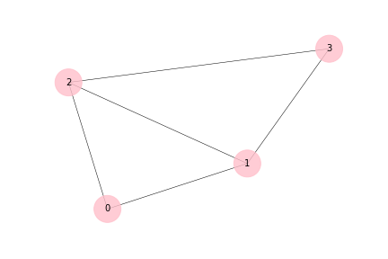
graphe correspondant à la matrice M
$$\begin{pmatrix} 0 & 10 & 10 & 9 \\\ 10 & 0 & 5 & 10 \\\ 10 & 5 & 0 & 10 \\\ 9 & 10 & 10 & 0 \end{pmatrix}$$Question: représenter le graphe pondéré dont la matrice d’adjacence est donnée ci-dessous:
Matrice de distance entre sommets
Une matrice d’adjacence peut aussi indiquer la distance entre sommets. Soit le reseau social ci-dessous:
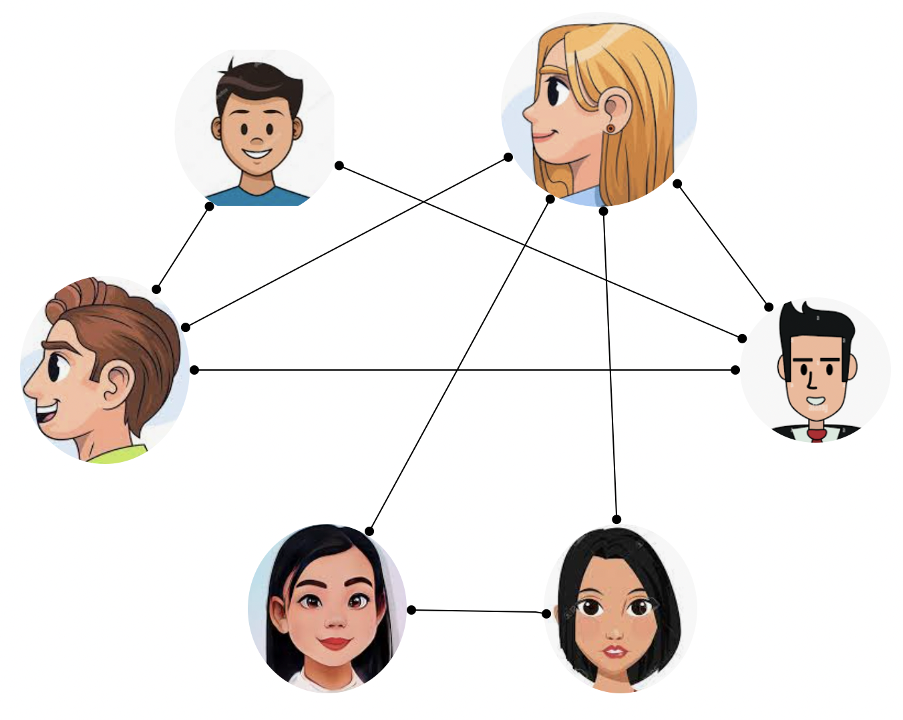
un reseau social
Exemple issu de la page PythonLycee - auteur Franck CHEVRIER
Simplifions la représentation de ce reseau social en un Graphe:
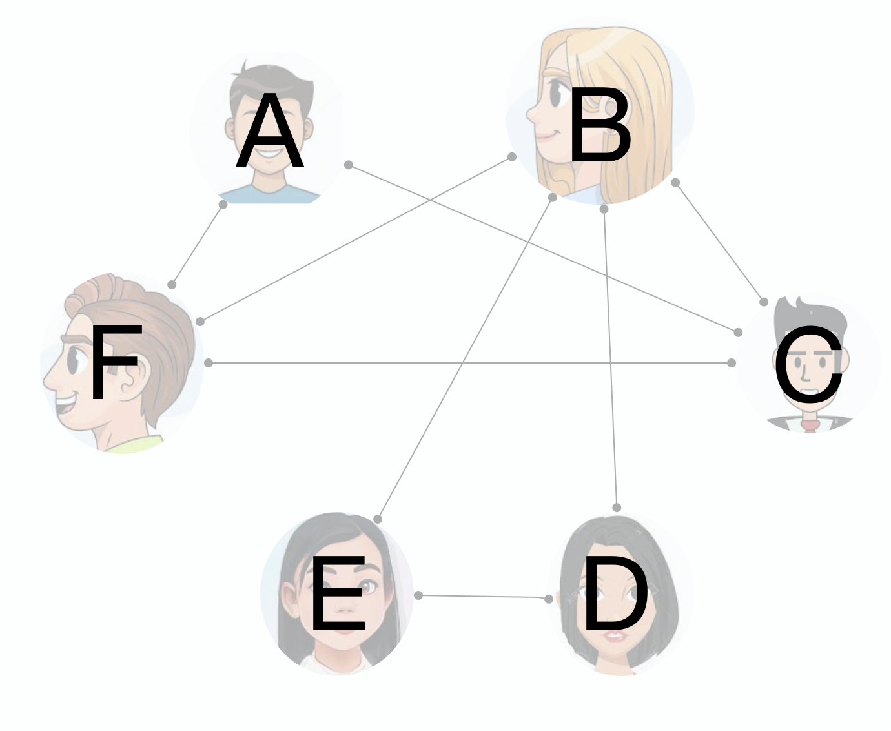
avec etiquettes aux sommets
Et utilisons la matrice d’adjacence pour indiquer le plus cours chemin d’un sommet à l’autre.
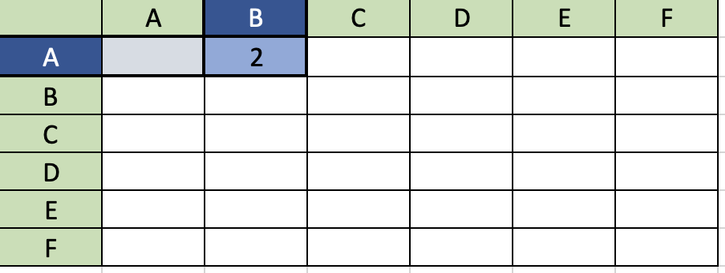
matrice des distances entre sommets
Ainsi, une fois la matrice établie, nous pouvons en déduire le diamètre de ce graphe (plus grande longueur entre 2 sommets du graphe). Ici, cette distance vaut 3.
Dans un graphe plus grand, la détermination du plus court chemin entre 2 sommets necessite une méthode basée sur un algorithme. Par exemple, l’algorithme BFS ou bien l’agorithme de Dijkstra.
Graphe avec étiquette
On utilisera un dictionnaire comme structure de données. Les clés étant les étiquettes des sommets, et les valeurs, la liste des sommets adjacents:
D = {‘a’: [ ‘b’, ‘c’], ‘b’: [ ‘a’, ‘c’, ’d’], ‘c’: [ ‘a’, ‘b’, ’d’], ’d’ : [ ‘b’, ‘c’]}
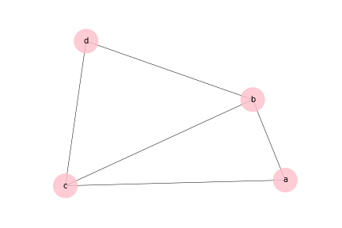
graphe correspondant au dictionnaire D
Question: Représenter la matrice d’adjacence équivalente.
Liste (chainée) de successeurs
Cette représentation est particulièrement adaptée aux graphes orientés.
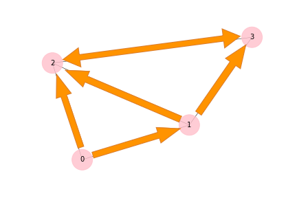
graphe orienté
sommet => liste de sommets liés suivants
Le sommet 0 aura alors 2 successeurs, les noeuds 1 et 2.
Question: Compléter la liste de successeurs
L’implémentation utilise le même principe que pour une liste chainée linéaire. Sauf qu’ici, le nombre de successeur est supposé être supérieur à 1.
Il y aura alors plus d’un attribut suiv. Supposons que le degré sortant maximum est égal à 3:
Liste (chainée) de predecesseurs
Il peut être necessaire d’établir aussi, pour chaque sommet, une liste de predecesseurs:
sommet => liste de sommets liés précédents
Question: Compléter la liste de prédécesseurs
Modéliser le réseau internet
Lien vers la page: réseau internet
Cas particulier d’un arbre: un graphe hierarchique
Liens
adaptés à la term NSI
- Exercices simples sur la morphologie des graphes avec corrections: hmalherbe.fr
- Algorithmes et structure de données utilisant la programmation orientée objets : https://notebooks.lecluse.fr/python/nsi/terminale/graphes/algorithmique/poo/tp/2020/08/17/nsi_t_algo_graphes.html#Exemples-de-graphes
- Notebook: PythonLycee - auteur Franck CHEVRIER
- Cours GLasius - ac-Bdx
plus loin, pour approfondir
- Cours et algorithmes sur les graphes : DUT Paris Orsay (format vignettes)
- Cours détaillé: Christine Solnon, CNRS (pdf)